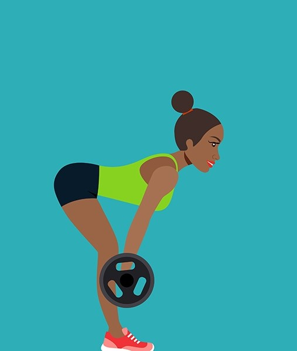

Exercise Description
Bent knee deadlifts target the hamstrings, glutes, and lower back. Stand with your feet hip-width apart and hold a dumbbell or barbell in front of you. With a slight bend in your knees, hinge at the hips to lower the weight towards the floor, then return to the starting position.
Reps and Sets
Beginners: 3 sets of 10-15 reps, weight: 5-10 kg
Rest time between each set: 30secs
Video Implementation